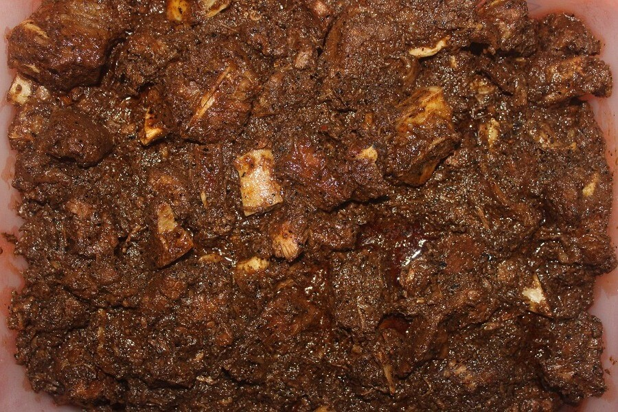
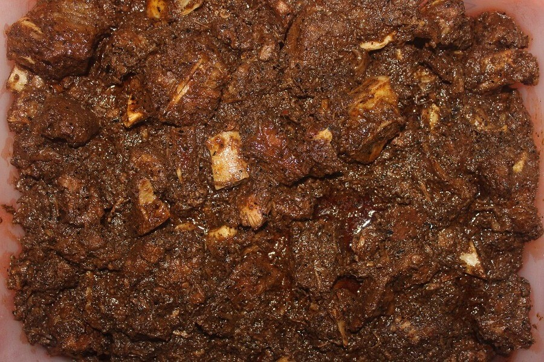
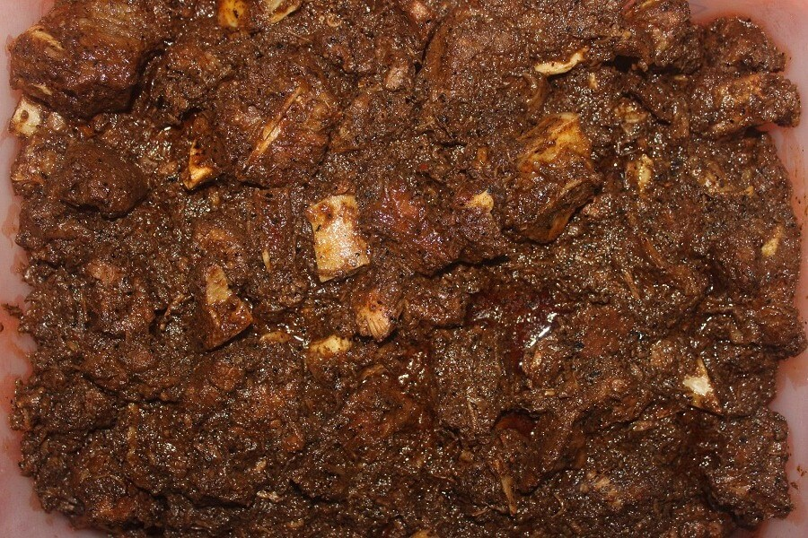

My Favourite Food
 

Imagine a place where endless stretches of golden sands meet the azure waters of the Bay
of Bengal, creating
a paradise for beach lovers. Welcome to Cox's Bazar, a coastal gem in Bangladesh that promises not just a
vacation but a journey into tranquility.
Cox's Bazar is famed for boasting the world's longest natural sea beach, stretching over 120 kilometers. As
you step onto the soft, powdery sands, the rhythmic waves create a soothing melody that instantly puts your
mind at ease. The beach is not just a place; it's an experience. You can take a leisurely stroll along the
shoreline, collect seashells, or simply bask in the warm sun while the gentle sea breeze caresses your skin.
For the adventurous souls, Cox's Bazar offers more than just a lazy day by the beach. Inani Beach, a hidden
gem within Cox's Bazar, is known for its pristine beauty and tranquility. The serene atmosphere and
crystal-clear waters make it an ideal spot for snorkeling and swimming.
A visit to Himchari National Park, located nearby, provides a unique opportunity to connect with nature. The
lush greenery, diverse flora, and fauna, including deer and monkeys, offer a refreshing break from the beach
scene. A trek through the park's trails leads to panoramic viewpoints, rewarding visitors with breathtaking
vistas of the coastline.
As the sun dips below the horizon, the beach transforms into a canvas painted in hues of orange and pink.
The sight of fishing boats returning with their catch adds a touch of authenticity to the scene, making
evenings at Cox's Bazar a spectacle to remember.
The local cuisine is a treat for your taste buds, featuring fresh seafood and traditional Bangladeshi
dishes. From mouthwatering fish curries to delectable street food, the culinary journey complements the
overall charm of Cox's Bazar.
In simple words, Cox's Bazar is not just a destination; it's a haven of serenity, adventure, and cultural
richness. Whether you seek relaxation on the shores, exploration in the hills, or a taste of local flavors,
Cox's Bazar welcomes you with open arms.
